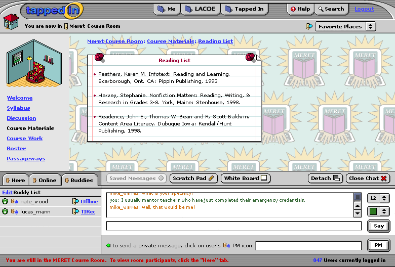

This screen shows an administrator/moderator's view of a course room. Other changes include: logout button, thumbtacks, smaller room image, and side navbar.
This screen shows a participant view of a group room. The background has been customized by the moderator. Also, notice that even beyond the welcome screen (we are looking at course materials: reading list), the room image remains alongside the side bar nav. The chat window shows the user viewing their buddy list, which is independent of the room's chat dialogue. Saved messages is greyed out because this user has no saved messages to read. If you don't like the big red cumfy chair, than check out the current MERET screen. I wanted to show an example of how Tapped In (for extra mulla) could adapt an organization's brand to our interface. See http://meret.lacoe.edu/welcome.html
We went over iteration 16 today. It's great! We just have a few small comments, which I'll try to summarize below.
- we wanted to see some other options for the door icon. some folks in our last advisory meeting couldn't tell it was a door. maybe make the arrow line skinnier or take the arrow away? we're not sure, just play with it...- in the buddy list, "Offline" shouldn't have a door icon (or be linked?) since it's not a place.
- we wanted to play with reducing the text in the PM area ("to send a private message...") or putting it on two lines. we wondered if it could be done so that the PM input field doesn't change from small to big, but just stays the same size all the time.- Mark wondered if the Saved Messages button could be shorted to Saved Msgs to save space (let the window be narrower); not a biggie, just a thought, veto if you like :)
- we wanted to see what it would look like to have the room welcome text running across the top instead of in a narrow column. text in narrower columns is easier to read, which is why I'm guessing you did it the way you did, but we wanted to see it anyway if possible...
- on the sticky notes, for owners (who can see edit), can you also have a close box on the note that they could use to delete the note? (we'll ask for confirmation, and also save the content in case they want to reshow it later).
- we're thinking we'd offer users 4 "stickie note" types. We're limiting it to 4 to reduce our development effort and try to cover most needs (for this version, anyway)...
1. Announcements: a kind of note that keeps a history of items added to it. we'll probably make it so you can add and edit announcements, but maybe can't delete them. (This raises an issue though: we thought the history on announcement might be good, but you'd probably only want to show the first X announcements on the stickie note or it would get way long...do we add a \"more\" link to the bottom of notes that go over a certain length--a link that would take you to a new page--or do we just display notes in their entirety and *not* save a history, in the case of announcements, or limit how many announcements you can have and allow delete?). We'd probably limit normal users to 1 of these types of stickies, and it may not be on by for joe user (rather something they explicitly add from their Settings if they want it; except it might be on by default for courses and groups?). Not sure if we'd let users edit the title of this stickie type (maybe it can only be titled "Announcements"?).
2. Featured Items: a note that displays any featured items (files, links, or passageways) that you have checked. It would have up to three sections, one for each type. If you haven't selected any files, for example, that section wouldn't appear; instead you'd just see an "add" link for that type. Non-room-owners wouldn't see the "edit" or "add" links.
If you click on edit for a certain type, you'd get a list of all of your files OR links Or passageways (depending which edit you clicked) and you can check which ones you want to display. if you aren't displaying any of one type right now, you need to click "add X" where X is files, links, or passageways. (We could add other possibilities of kinds of things to feature, these 3 just jumped out at us). We'd probably limit joe user to one of these, and "stock" it with the Tapped In Reception passageway and maybe a link or two. Not sure if we'd let users edit the title of this stickie type (it can only be titled "Featured Items"?).
3. Quick Look: This is your stickie about group/course stats (number of members, etc.) This would not be editable even by the owner, just visible or hidden by an owner of a group or course. There would only be a need for one of these items on the group/course home page, and it could be there by default. Not sure if we'd let users edit the title of this stickie type (it can only be entitled "Quick Look"?).
4. Generic Note: A catch-all stickie template that a room owner could type any text into, and give any title too. We'd offer only up to X generic note stickies to every room owner (where X is something like 3) because we will store the contents of each note in our database even if they delete it, so they can bring it back again later if they like (or made a mistake) and we don't want users to create a bazillion notes that clutter our database or clutter up pages. Users can browse all of their notes in their Settings and from there elect to show or hide them on the front Welcome page at will. (From their Welcome page they can also edit and hide them at will). We'd probably have at least one default generic note up in every office/course/group when it is created, with an introduction or information about tappedin (maybe something like "Getting Started") that users could delete or edit to fill with their own content later.
We figured that in the Settings, a room owner could access all of their stickies (Announcements, Features Items, Quick Look, 3 Generic Notes) to show or hide them, and they could also hide or edit them from the Welcome page, but they'd have to go to Settings to show one they had hidden earlier (or that weren't on by default at creation).
Does this make sense? Any suggestions?